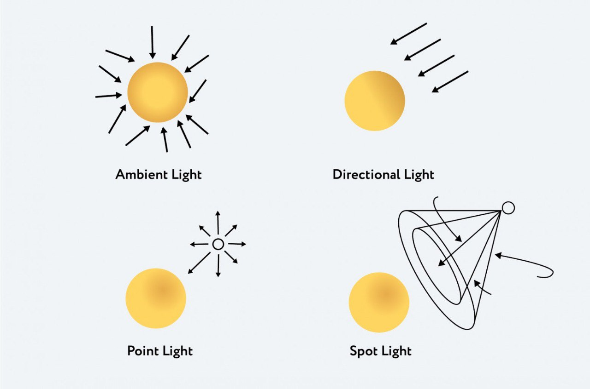

Hello! We will talk about Three.js
Made by Kate Goncharick
WebGL – is a JavaScript software library that allows you to create 3D graphics that work in browsers. This library It is based on the architecture of the OpenGL library. WebGL is interesting because the code is modeled directly in the browser. To do this, WebGL uses the canvas object, which was introduced in HTML5.
Working with WebGL is difficult - you need to describe every line and point. The result will be really verbose.
const positions = [
// Front face
-1.0, -1.0, 1.0, 1.0, -1.0, 1.0, 1.0, 1.0, 1.0, -1.0, 1.0, 1.0,
// Back face
-1.0, -1.0, -1.0, -1.0, 1.0, -1.0, 1.0, 1.0, -1.0, 1.0, -1.0, -1.0,
// Top face
-1.0, 1.0, -1.0, -1.0, 1.0, 1.0, 1.0, 1.0, 1.0, 1.0, 1.0, -1.0,
// Bottom face
-1.0, -1.0, -1.0, 1.0, -1.0, -1.0, 1.0, -1.0, 1.0, -1.0, -1.0, 1.0,
// Right face
1.0, -1.0, -1.0, 1.0, 1.0, -1.0, 1.0, 1.0, 1.0, 1.0, -1.0, 1.0,
// Left face
-1.0, -1.0, -1.0, -1.0, -1.0, 1.0, -1.0, 1.0, 1.0, -1.0, 1.0, -1.0,
];
Three.js – helps to reduce code amount and make coding more simple. It has a predefined set of classes which will create interactive 3D graphic in WebGL
Created by Ricardo Cobello (Mr.Doob).
There are 3 main terms
There are some types of cameras. The most popular are:
Also you can control the light
The object on the Scene is called Mesh.
Mesh — is a class, representing objects based on a triangular polygonal grid. Constructor takes two arguments:
import * as THREE from 'three';
const scene = new THREE.Scene();
const camera = new THREE.PerspectiveCamera( 75, window.innerWidth / window.innerHeight, 0.1, 1000 );
const renderer = new THREE.WebGLRenderer();
renderer.setSize( window.innerWidth, window.innerHeight );
document.body.appendChild( renderer.domElement );
const geometry = new THREE.BoxGeometry( 1, 1, 1 );
const material = new THREE.MeshBasicMaterial( { color: 0x00ff00 } );
const cube = new THREE.Mesh( geometry, material );
scene.add( cube );
camera.position.z = 5;
function animate() {
requestAnimationFrame( animate );
cube.rotation.x += 0.01;
cube.rotation.y += 0.01;
renderer.render( scene, camera );
}
animate();
>